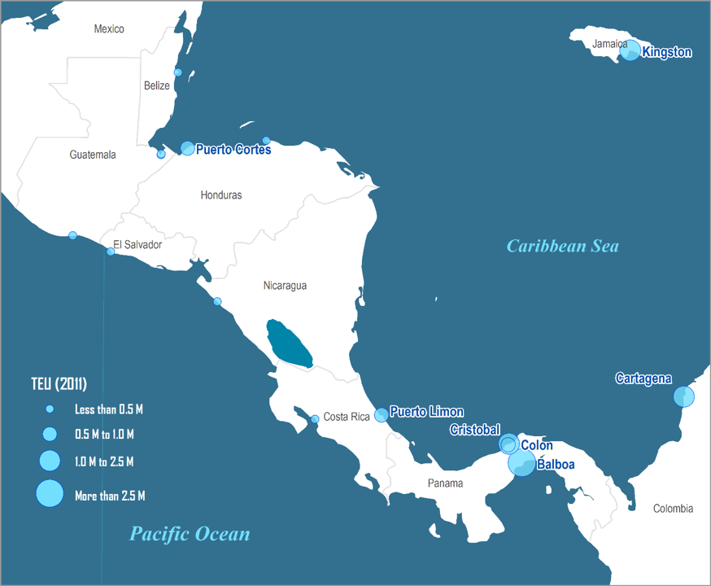
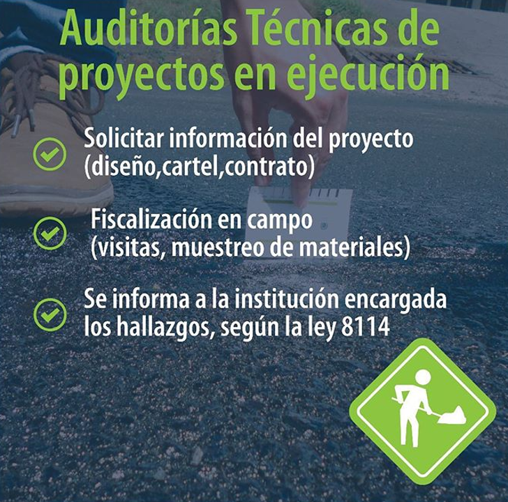

LOS ENTES QUE COMPONEN EL EJE DE CONTRUCCION DE INFRAESTRUCTURA
Geog. Dennis Chavarría Córdoba
Colegio Federado de Ingenieros y Arquitectos
Leyes que facultan la construcción y renovación vial
-
Ley 9292 Desarrollo de Obra Pública Corredor Vial San José-San Ramón y sus Radiales, mediante Fideicomiso
-
Ley 9293 Aprobación del Financiamiento al Proyecto Rehabilitación y Extensión de la Ruta Nacional No.32, Sección Ruta 4-Limón
-
Ley 8844 Aprobación del contrato de préstamo y su addendum suscrito entre la República de Costa Rica y la Corporación Andina de Fomento (CAF), para financiar el proyecto Bajos de Chilamate-Vuelta Kooper
-
Ley de Desarrollo de Obra Pública Corredor Vial San José-Cartago mediante Fideicomiso
-
Ley 7798 Creación del Consejo Nacional de Vialidad
Concesiones
Ley 7404 Ley General de Concesión de Obra Pública
-
Ruta nacional 27 (Única concesión de carreteras “exitosa”)
-
Terminal Granelera de Puntarenas
-
Terminal de Contenedores de Moin
-
Aeropuerto Daniel Oduber
Concesiones
Ley 7404 Ley General de Concesión de Obra Pública
Infructuosas (Ruta 1 San José - San Ramón)
En desarrollo (Megapuerto de Transferencia del Atlántico)
Artículo 3.- El Poder Ejecutivo, los entes descentralizados y las municipalidades pueden otorgar concesiones para la construcción, reparación, ampliación, conservación y restauración de obras públicas y su correspondiente explotación, con base en las disposiciones de esta Ley.

Decretos de emergencia
-
Nº 8488 Ley Nacional de Emergencias y Prevención del Riesgo
-
Nº 36440-MP Declara Estado de emergencia la Situación y el Proceso Desencadenado ante la Violación de la Soberanía Costarricense por parte de Nicaragua
-
Artículo 3º-Se tienen comprendidas dentro de esta declaratoria de emergencia todas las acciones y obras necesarias para la protección de la vida, la integridad física, los bienes y el ambiente, así como la atención, rehabilitación, reconstrucción y reposición de la infraestructura, las viviendas, las comunicaciones y las actividades productivas dañadas y en general todos los servicios públicos dañados que se ubiquen dentro de la zona de cobertura señalada en el artículo 1) de este Decreto, todo lo cual debe constar en el Plan General de la Emergencia aprobado por la Junta Directiva de la Comisión Nacional de Prevención de Riesgos y Atención de Emergencias, para poder ser objeto de atención conforme al concepto de emergencia.
Coordinación Interinstitucional
Ministerio de Obras Publicas y Transportes
Dependiendo del tipo de obra
-
Cuerpo Nacional de Bomberos
-
DGAC (Dirección General de Aviación Civil)
-
CONAI (Comisión Nacional de Asuntos Indígenas)
-
SINAC (Sistema Nacional de Áreas de Conservación)
-
AyA (Instituto Costarricense de Acueductos y Alcantarillados)
-
ICE (Instituto Costarricense de Acueductos de Electricidad)
-
RECOPE (Refinadora Costarricense de Petróleo)
-
ARESEP (Autoridad Reguladora de los Servicios Públicos)
Verificación de materiales
Rutas Nacionales
LANAMME
-
El Laboratorio Nacional de Materiales y Modelos Estructurales (LanammeUCR), es una entidad académica de investigación adscrita a la Escuela de Ingeniería Civil de la Universidad de Costa Rica.
-
Bajo el marco de la Ley N° 8114, le corresponde al LanammeUCR realizar una evaluación cada dos años del estado de la red vial nacional pavimentada, la cual sirve como instrumento eficaz e imparcial de rendición de cuentas y de planificación técnica para la gestión vial y de la inversión pública realizada.

UNOPS
-
Desde 2014, UNOPS asiste al Gobierno de Costa Rica y a otras entidades nacionales en una amplia variedad de proyectos que se ejecutan en diferentes puntos del país.
-
El equipo de UNOPS implementa proyectos de agua y saneamiento, así como diversos proyectos de construcción de infraestructuras como puentes y carreteras, para lo que presta especial atención a la sostenibilidad
Proyectos UNOPS
Colegio Federado de Ingenieros y de Arquitectos
-
Tasación de Proyectos
-
Planos Constructivos
-
APC y Bitácora Digital
-
Asiste técnicamente al Estado
-
Código Sísmico
-
Código Hidrológico